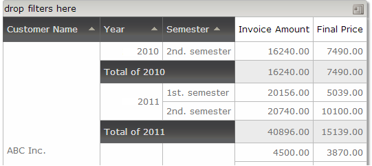

GXquery allows grouping values according to certain predefined criteria, only for elements of Date and DateTime type. This way of grouping values is especially useful when the output type is Pivot table. The values that can be used for grouping other values are as follows:
To do so, there is a new category in the properties of a QueryElement called "Grouping" (visible only for elements of Date and Datetime type) with the following properties.
A list is needed with the sales made to the company's clients. To do so, we build the Query object with the attributes Customer name, Invoice date, Invoice amount and Final price (for more details about how to create a Query object, read Query object). After building the Query object with the above attributes, select the Query Element Invoice Date and change the value of the “Group by year” property to True. Because it was set to True, the “Year title” property that has the “Year” value by default is enabled. Click on the property and change the value to “Grouping by year”. At runtime, the result will be as follows: As you can see, it is made up of the client’s name, the invoice date, subtotal, total, and the year that we’ve just entered in the property, in the column before the date column. We pivot the year column by dragging it to the first column. The image below shows the Pivot table after it has been reordered. It is also possible to combine more than one criterion at the same time. Suppose that we set the “Year” and “Semester” properties to True. The result would be as shown below. Hiding the selected columnIt may happen that we don’t want to show the column selected as indicated above. To do so, we need to change the value of the “Hide value” property to True. Continuing with the previous example, we set the property to True. The image below shows the new format. 
|